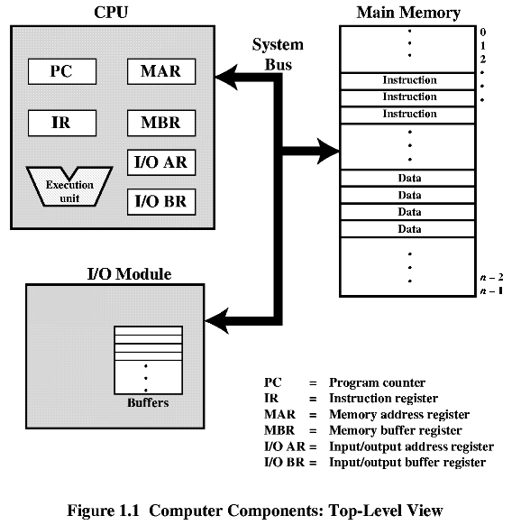
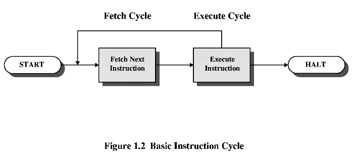
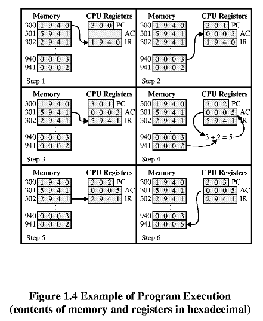
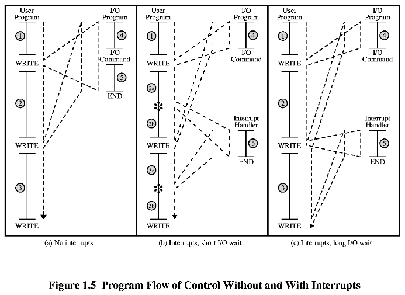
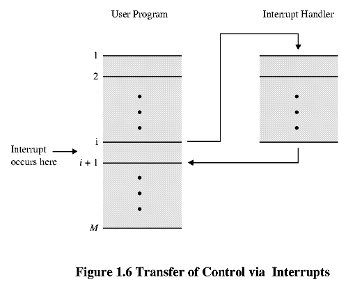
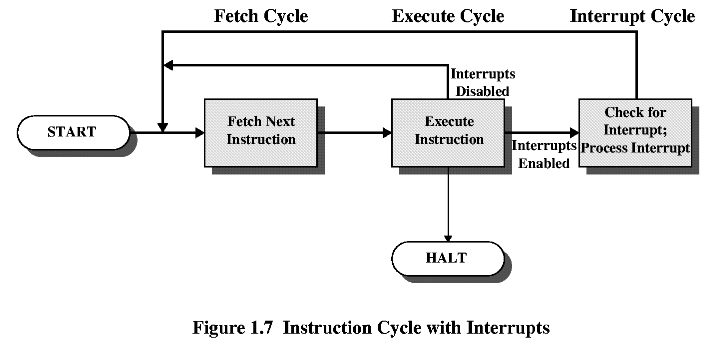
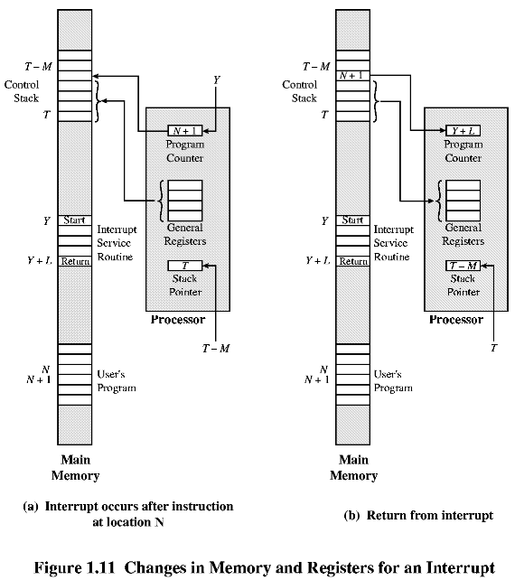
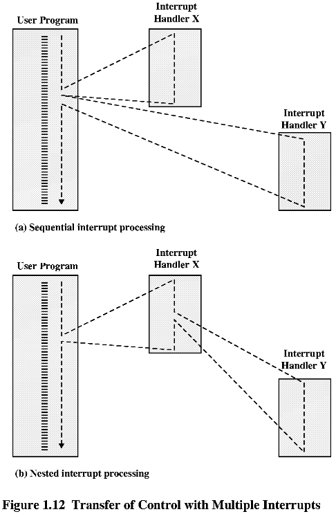

Операционни системи
1 (1). Общ преглед на компютърните системи
Операционната система използва hardware-ните ресурси на един или повече
процесора за да осигури обслужване на един или повече потребители. Операционната
система управлява паметта и входно/изходните устройства.
1.1 Базисни елементи.
- Процесор (CPU).
- Памет (Main Memory).
- Входно/изходни (I/O) устройства.
- Системни връзки (System Bus).

1.2 Регистри и режими на процесора.
** Видими за потребителя регистри:
- регистри за данни;
- адресни регистри - индексни, сегментни указатели
[деление на паметта на сегменти], указател за стека и др.;
- флагове - резултат от сравнение, от аритметична
операция, ...
** Контролни регистри и регистри на състоянията.
PC - program counter (съдържа адреса на текущата
инструкция)
IR - instruction register (съдържа текущата инструкция)
PSW - program status word (дума за състоянието на
програмата) :
Sign, Zero, Carry (пренос), Equal, Overflow, Interrupt
enable/disable, режими на работаSupervisor (supervisor/kernal mode or user
mode)
** Режими за работа на процесора:
- режим ядро (kernal mode);
- потребителски режим (user mode).
Ограничение за някои инструкции и достъп до паметта в user mode.
Освен в регистрите, управляваща информация (за процесора) може да се
съхранява и в долната част на паметта.
1.3 Изпълнение на инструкциите.
Две стъпки:
1. Зареждане (fetch - донасям, довеждам) от паметта
в IR.
2. Изпълнение на инструкцията, записана в IR.

Най-общо има 4 вида инструкции:
1. Процесор-памет (processor-memory);
2. Процесор-вход/изход (processor-I/O);
3. Обработка на данни (data processing);
4. Управляващи (control);
Пример.
Да разгледаме хипотетична машина, която има 3 регистри:
PC и IR от Fig.1.1 и още един регистър за данни - AC (accumulator). Даден
е и формата на командите:
OpCode е код на командата и приема следните стойности:
| OpCode |
действие |
| 1 |
зарежда AC от Address в паметта |
| 2 |
записва AC в Address в паметта |
| 5 |
добавя към AC стойността от Address в паметта |
На Fig.1.4 са дадени стъпките на работа на машината
при решаване на задачата: към съдържанието на клетка 941 от паметта се
добавя съдържанието на клетка 940, като получения резултат се записва в
клетка 941 (2+3=5). Задачата се решава с 3 цикъла на инструкциите.

1.4 Прекъсвания.
Класове от прекъсвания:
- Програмни (program - overflow, division by zero, illegal instruction,
out of memory);
- Часовника (timer);
- Входно-изходни (I/O) - сигнал за завършване на действието или код
на грешка;
- Повреда в хардуера (hardware failure).


** Прекъсвания и цикъла на инструкциите.

** Обработка на прекъсването.
Прекъсването предизвиква събития в hardware и software:
1. Устройството изпраща прекъсване към процесора.
2. Процесорът завършва изпълнението на текущата инструкция преди да
отговори на прекъсването.
3. Процесорът проверява за прекъсване, идентифицира прекъсването и
връща потвърждение на устройството, че прекъсването е прието.
4. Процесорът запазва информация за текущата програма (поне PSW), като
я записва в системния управляващ стек (system control stack).
5. Процесорът зарежда PC с първия адрес на програмата, съответстваща
на прекъсването (interupt-handling program).
6. Програмата за обработка на прекъсванено записва в системния управляващ
стек регистрите и друга нформация.
7. Изпълнява се прекъсването - проверява се кода на изпълнение на I/O
операцията, отговаря се на I/O устройството.
8. Програмата за обработка на изключенията възстановява състоянието
на регистрите.
9. Възстановява се PC и PSW и прекъсната програма продължава работата
си.

** Многократни прекъсвания.

** Многозадачна ОС (multiprogramming).
Няколко програми се изпълняват "едновременно", по-точно,
чакат готови за изпълнение от процесора. След прекъсване процесорът може
да изпълнява друга програма в зависимост от зададени приоритети на чакащите
за изпълнение програми.